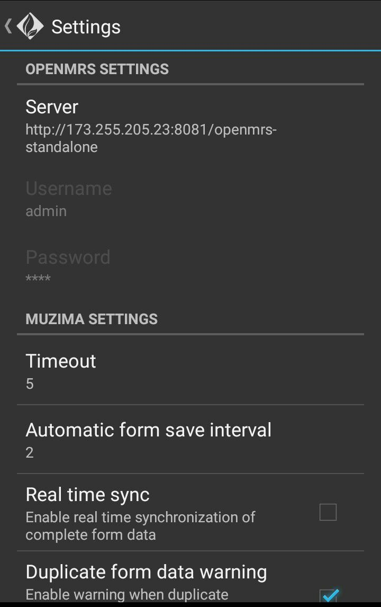

mUzima Settings
On the mUzima dashboard page tap on the 3 dots on the righthand cornerand tap on settings
:
Appearance of the settings page
:

Operations under settings
:
-
Server Settings
-
This identifies the URL to which the mUzima App is linked and draws data from. To change server URL, tap on the available server link and you'll be enabled to make the necessary changes. The User name and password can only be changed from the server side. After changing the URL, tap on Okay.
-
mUzima settings
- Time Out
Time out refers to the time of inactivity after which the Aplication will automatically log out. This is a security feature that is aimed at safeguarding patient information.
- Automatic form save interval
This is the time interval it takes for the forms to save automatically without the need of the provider consciously saving.
- Real time sync
Allows for automatic upload of completed patient forms
- Duplicate form data warning
Once the chaeck box is checked, the user will be warned in case a duplicate of a form for the same patient is being filled.
- Font size
Here the user can adjust the font size to one that is most suitable by choosing among the small, medium or large fonts. This font size applies to forms.
-
Provider/Location settings
- Default encounter provider
Once this checkbox is checked, the logged in user will be the provider by default.
-
Add provider(s)
-
Under this section, the user can add providers
-
Add location(s)
-
Under this section, the user can add Locations
-
Cohort Settings
-
Add cohort prefixes
-
Add concept(s)
-
The user can download more concepts as need may arise